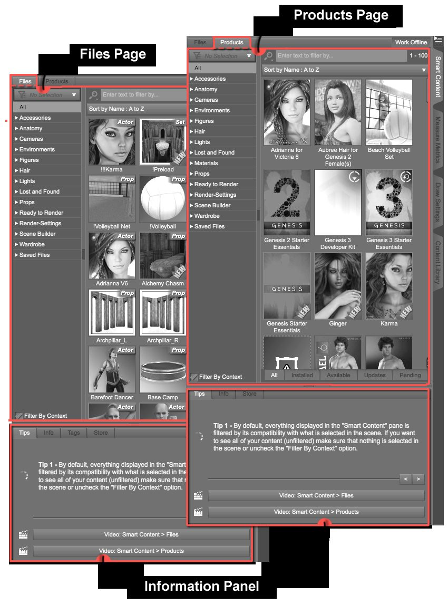
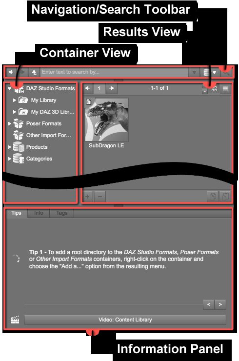
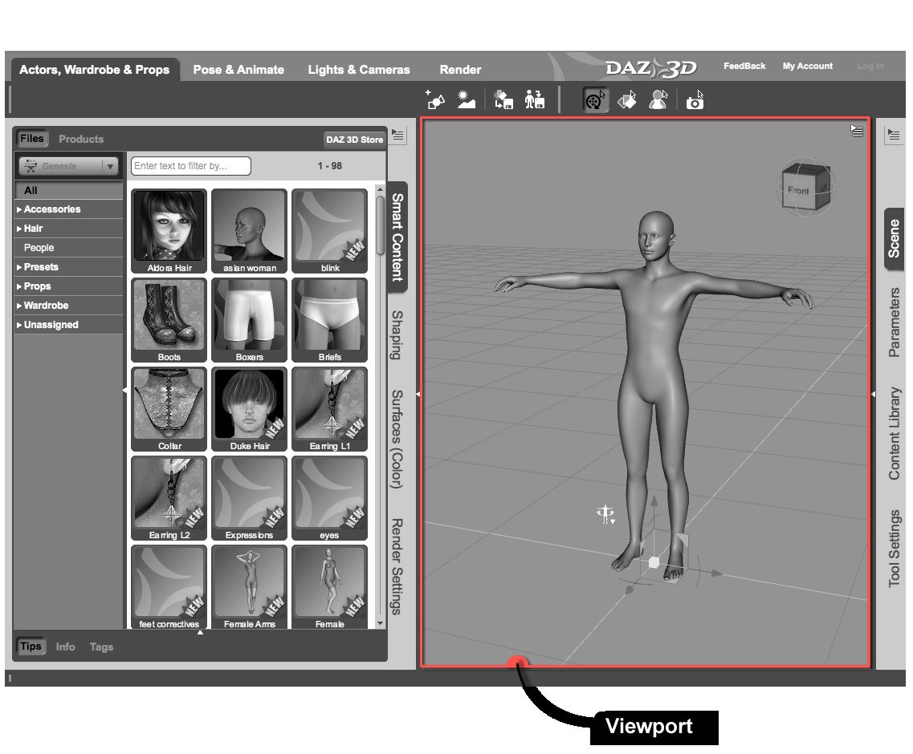

ជំពូក ២ — សាងសង់ឆាក
បកប្រែពី៖ II — Building a Scene · Loading and Modifying Content in DAZ Studio
គោលការណ៍នៃការសាងសង់ឆាកក្នុង Daz Studio ស្រដៀងនឹងការរៀបចំឆាកថតរូប ឬថតភាពយន្តពិតៗ — អ្នកត្រូវការផ្ទៃខាងក្រោយ ឬ «Set», «Actor», «Wardrobe» (សម្លៀកបំពាក់), «Props», «Lights» និង «Cameras»។ ជំពូកនេះផ្ដោតលើ តួ សម្លៀកបំពាក់ props និង set — ចប់ជំពូកនេះ អ្នកនឹងអាចផ្ទុក និងរៀបចំធាតុទាំងនេះដើម្បីបង្កើតឆាកសាមញ្ញមួយបាន។
Note
ជំពូកនេះប្រើ Activity 'Actors, Wardrobe & Props' នៃ layout Hollywood Blvd។ ទីកន្លែងផ្ទុកមាតិកាសំខាន់មានពីរ — Smart Content និង Content Library (មើល ជំពូក ១) — ប៉ុន្តែទីនេះផ្ដោតលើ Smart Content ព្រោះវាងាយស្រួលបំផុត។
លំដាប់លំហូរការងារដែលមានប្រសិទ្ធភាព
ការផ្ទុកមាតិកាអាចធ្វើតាមលំដាប់ណាក៏បាន ប៉ុន្តែលំដាប់ខាងក្រោមមានប្រសិទ្ធភាពជាង៖ តួ → សម្លៀកបំពាក់/សក់ → props → បរិស្ថាន។ វិធីនេះអនុញ្ញាតឱ្យកែតួ សម្លៀកបំពាក់ និង props ដោយគ្មានការរំខានពីផ្ទៃខាងក្រោយដ៏ធំ។
ការផ្ទុកតួ (Actor)
បើកផ្ទាំង Smart Content (ខាងឆ្វេង) ហើយប្រាកដថាកំពុងរុករក page Files (មិនមែន Products)
ជ្រើស category Figures — ពង្រីកវាដើម្បីឃើញ subcategories សម្រាប់ច្រោះបន្ថែម
ចុចពីរដងលើរូបភាពតំណាងដើម្បីផ្ទុកតួ ឬអូសទម្លាក់ចូល Viewport
Daz Studio ភ្ជាប់មកជាមួយតួមួយចំនួនដោយឥតគិតថ្លៃ ហើយអាចទិញបន្ថែមពី DAZ 3D Store។ អ្នកអាចផ្ទុកតួដូចគ្នាច្រើន instance ឬតួផ្សេងៗគ្នាច្រើនក្នុងឆាកតែមួយ។ សម្រាប់ការអនុវត្តតាមមគ្គុទ្ទេសក៍នេះ គេណែនាំឱ្យចាប់ផ្តើមជាមួយ Genesis 2 Base Female។


ផ្ទាំង Smart Content — កន្លែងផ្ទុកមាតិកាតាមបរិបទ — រូបភាពពីឯកសារផ្លូវការ DAZ 3D


ផ្ទាំង Content Library — កន្លែងផ្ទុកមាតិកាទី ២ (រុករកគ្រប់អ្វីដែលបានដំឡើង) — រូបភាពពីឯកសារផ្លូវការ DAZ 3D
សម្លៀកបំពាក់ និងសក់
ពេលផ្ទុកតួចូលឆាកទទេ វាត្រូវបានជ្រើសដោយស្វ័យប្រវត្តិ — ប៉ុន្តែជាទម្លាប់ល្អ គួរផ្ទៀងផ្ទាត់ការជ្រើសជានិច្ច៖ បើកផ្ទាំង Scene ហើយប្រាកដថាឈ្មោះតួលេចពណ៌ (highlighted) និងមាន bounding box ជុំវិញតួក្នុង Viewport។
Important
ពេលផ្ទុកសម្លៀកបំពាក់ ឬសក់ ត្រូវជ្រើសតួជាមុនសិន — Smart Content ច្រោះមាតិកាតាមការជ្រើសបច្ចុប្បន្ន។
សម្លៀកបំពាក់៖ ជ្រើស category Wardrobe (មានតែសម្លៀកបំពាក់ដែលស្របនឹងតួដែលជ្រើសប៉ុណ្ណោះដែលលេចឡើង) រួចផ្ទុក top និង bottom ដោយចុចពីរដង ឬអូសទម្លាក់លើតួ
សក់៖ ជ្រើស category Hair រួចចុចពីរដង ឬអូសទម្លាក់លើក្បាលតួ
សម្លៀកបំពាក់ និងសក់ភាគច្រើននឹង «fit» ទៅតួដោយស្វ័យប្រវត្តិ — បើមិនដូច្នោះ សូមមើលផ្នែក Fit To ខាងក្រោម។
Props (វត្ថុតុបតែង)
មិនមែនគ្រប់ឆាកទេដែលត្រូវការ props ប៉ុន្តែវាជាវិធីដ៏ល្អដើម្បីបន្ថែមព័ត៌មានលម្អិត — ភាពខុសគ្នារវាង render ធម្មតា និង render ដែលគួរឱ្យរំភើប។
ក្នុង Daz Studio «Prop» គឺជាវត្ថុស្តាទិច (មិនអាច pose បាន) ណាមួយដែលផ្ទុកចូលឆាកបាន — ខ្លះរចនាឡើងដើម្បីប្រើជាមួយតួ (អាវុធិន, គ្រឿងអលង្ការ) ខ្លះនៅដាច់ដោយឡែក (តុ កៅអី កម្រាល)។
Props ស្ថិតក្នុង category Props នៃ Smart Content។ បើកំពុងជ្រើសតួ ផ្ទាំងនឹងច្រោះមាតិកា — បើគ្មាន prop ស្រប category នេះអាចមិនលេចឡើងទាល់តែសោះ។ ដកការជ្រើសដោយចុចកន្លែងទទេក្នុង Viewport។
អូសទម្លាក់មានប្រយោជន៍ជាពិសេសសម្រាប់ prop ដែលប្រើជាមួយតួ — ឧ. អូសដំបងទៅដាក់លើដៃ ឬខ្សែកទៅលើក។ ពេលអូស សង្កត់ទុកលើផ្នែករាងកាយរហូតដល់ម៉ឺនុយលេចឡើង រួចជ្រើសដើម្បី parent prop ទៅផ្នែកនោះ
សង្កត់ Alt (Windows) / Option (Mac) ពេលអូស ដើម្បីបង្ហាញ drop target (ទីតាំងជាក់លាក់ដែលវត្ថុនឹងផ្ទុក)
Note
Prop ភាគច្រើនអាចប្រើជាមួយតួណាក៏បាន (ទោះរចនាសម្រាប់តួផ្សេង) ដោយការកែបន្តិចបន្តួច — ដកការជ្រើសមុនពេលរុករក props ដើម្បីឃើញទាំងអស់។
បរិស្ថាន (Environment)
បរិស្ថានមិនចាំបាច់ជាចំណុចកណ្ដាលនៃឆាកទេ — ជាញឹកញាប់វាបន្ថែម «រសជាតិ» និងបរិបទទៅឆាក ជាស្រទាប់បន្ថែមនៃរឿងដែលអ្នកចង់ប្រាប់។
ដកការជ្រើស បច្ចុប្បន្នសិន ដើម្បីកុំឱ្យ Smart Content ច្រោះបរិស្ថានចេញ
ជ្រើស category Environments (ពង្រីកដើម្បីឃើញ subcategories)
បរិស្ថានជាច្រើនបែកជាច្រើនចំណែកដែលផ្ទុកដាច់ដោយឡែកបាន — ប៉ុន្តែជាទូទៅមាន preset ដែលផ្ទុកទាំងអស់គ្នា ឈ្មោះដូចជា «Preload» ឬ «Load All»។ ចុចពីរដងលើ preset នោះ (ឬអូសទម្លាក់ — សង្កត់ Alt/Option ដើម្បីឃើញ drop target)
សញ្ញាបង្ហាញប្រភេទមាតិកា (Content Type Indicators)
មាតិកាក្នុង Smart Content មាន «Content Type Indicator» នៅជ្រុងខាងលើស្ដាំនៃរូបភាពតំណាង។ សញ្ញានេះមានគោលបំណងពីរ៖ ពណ៌ ប្រាប់ពីឥរិយាបថពេលផ្ទុក · អក្សរ ប្រាប់ពីប្រភេទឯកសារ (actor, wardrobe, hair, environment, pose, light...)។
ពណ៌ |
ឥរិយាបថពេលផ្ទុក |
|---|---|
🟢 បៃតង |
ផ្ទុកវត្ថុថ្មីចូលឆាក (តួ សម្លៀកបំពាក់ prop...) |
🟡 លឿង |
កែ វត្ថុដែលមានស្រាប់ក្នុងឆាក — ត្រូវការជ្រើសវត្ថុជាមុន (ឧ. Pose Presets, Material(s) Presets) |
🔵 ខៀវ |
អាចផ្ទុកវត្ថុថ្មី ឬ កែវត្ថុស្រាប់ — អាស្រ័យលើការជ្រើសបច្ចុប្បន្ន (ឧ. Character Preset) |
🔴 ក្រហម |
ជំនួស វត្ថុទាំងអស់ដែលមាន Content Type ដូចគ្នាក្នុងឆាក (ឧ. Light(s) Preset ជំនួសពន្លឺទាំងអស់ · Scene file ជំនួសឆាកទាំងមូល) |
🟣 ម៉ាហ្សង់តា |
ឯកសារមាន Content Type ទូទៅពេក — មិនមានប្រយោជន៍ជាក់ស្ដែង (គួរតែមិនដែលជួប) |
Note
សង្កត់ Ctrl/Cmd ពេលផ្ទុកមាតិកា DSON (ឯកសារ .duf) ដើម្បីបើកផ្ទាំងសន្ទនាគ្រប់គ្រងឥរិយាបថផ្ទុកលម្អិត។
ផ្ទាំង Scene — លម្អិតបន្ថែម
តួ (Figures) ត្រូវបានរៀបចំជា លំដាប់ថ្នាក់ (Hierarchy) — អ្នកអាចជ្រើសកម្រិតកំពូល («root node», «root» ឬ «skeleton») ឬកម្រិតណាក៏បាន («node» ឬ «bone») ដូច្នេះអាចជ្រើសមនុស្សទាំងមូល ឬគ្រាន់តែដៃ ជើង ឬម្រាម។
ពង្រីក/បង្រួមទាំងអស់៖ ចុចស្ដាំក្នុងផ្ទាំង → Expand > Expand All ឬ Collapse > Collapse All
ពង្រីកម្ដងមួយៗ៖ ចុចព្រួញខាងឆ្វេងវត្ថុ ឬប្រើគ្រាប់ព្រួញក្ដារចុច — ← បង្រួម · → ពង្រីក · ↑↓ ប្ដូរការជ្រើស
Parent/Child៖ អូសវត្ថុ «កូន» ទៅដាក់លើវត្ថុ «ម្ដាយ» — ប្រអប់ពណ៌នឹងលេចជុំវិញម្ដាយ រួចលែង។ កូនដើរតាមម្ដាយគ្រប់ទីកន្លែង (ផ្លាស់ទី/បង្វិល/ប្ដូរទំហំ) ប៉ុន្តែម្ដាយមិនដើរតាមកូនទេ។ មានប្រយោជន៍សម្រាប់ props និងការរៀបចំឆាកជាក្រុម។ ឧទាហរណ៍៖ parent ដំបងទៅដៃរបស់តួ។
ការគ្រប់គ្រងទិដ្ឋភាពក្នុង Viewport
ឆាករបស់អ្នកមាន ៣ វិមាត្រ (ទទឹង កម្ពស់ ជម្រៅ) — អ្នកជាអ្នកដឹកនាំអាចមើលវាពីគ្រប់ទិស។ «Viewport Controls» ស្ថិតនៅ ជ្រុងខាងលើស្ដាំ នៃ Viewport (ពីលើ ទៅស្ដាំ ចុះក្រោម)៖
View Selection
DrawStyle Options
Viewport Options
View: Orbit / Rotate / Bank
View: Pan / Dolly
View: Dolly Zoom / Focal Zoom
View: Frame / Aim
View: Reset
Camera Cube


Viewport និងកន្លែងដែល Viewport Controls ស្ថិតនៅ — រូបភាពពីឯកសារផ្លូវការ DAZ 3D
Tip
បើភ្លេចមុខងារ control ណាមួយ គ្រាន់តែដាក់ទ្រនិចកណ្ដុរលើវា — tooltip នឹងលេចឡើង។
View Selection
Daz Studio គាំទ្រកាមេរ៉ាច្រើន រួមទាំងទិដ្ឋភាព orthographic ជាច្រើន និង «Perspective View» មួយដែលដើរតួជា Director's Viewfinder។ ប្រើ «View Selection Menu» ដើម្បីប្ដូររវាងទិដ្ឋភាព កាមេរ៉ា ឬសូម្បីតែ directional lights។ ឈ្មោះដែលបង្ហាញពេលម៉ឺនុយបិទ = ឈ្មោះទិដ្ឋភាព/កាមេរ៉ា/ពន្លឺសកម្ម។ (លម្អិតនៅ ជំពូក ៦)
Note
សម្រាប់ជំពូកនេះ គួរជ្រើស Perspective View។
DrawStyle Options
«DrawStyle» = របៀបដែល Daz Studio បង្ហាញ ការមើលជាមុន នៃឆាកក្នុង Viewport (រូបភាពចុងក្រោយពេល Render នឹងលម្អិតជាងនេះឆ្ងាយ — ពេលធ្វើការ Daz Studio បង្ហាញគុណភាពទាបដើម្បីសន្សំធនធាន និងឆ្លើយតបលឿន)។
ជម្រើសមាន៖ Wire Bounding Box, Solid Bounding Box, Wireframe, Texture Shaded និង Cartoon Shaded។ លំនាំដើមគឺ Texture Shaded — លម្អិតបំផុតក្នុងការមើលជាមុន និងជាជម្រើសដែលអ្នកប្រើភាគច្រើនចូលចិត្ត។
Viewport Options
ម៉ឺនុយនេះអនុញ្ញាតឱ្យបត់បែន Viewport បន្ថែម៖
Dock ឬ float ឱ្យ Viewport controls (លំនាំដើម = float)
បិទ/បើក «Floor Grid», «Aspect Frame» និង «Camera Cube»
Change Background Color… — សកម្មភាពដែលគេប្រើច្រើនបំផុត៖ បើកផ្ទាំងសន្ទនា «Select Color» ដើម្បីជ្រើសពណ៌ណាក៏បានក្នុងវិសាលភាព RGB។ លំនាំដើមរបស់ Hollywood Blvd គឺខៀវស្រាល RGB
121, 141, 176— ពណ៌ប្រផេះស្រស់ (ឧ.94, 94, 94) អាចស្រួលភ្នែកជាង។ Layout នីមួយៗមានពណ៌ផ្ទៃខាងក្រោយរៀងខ្លួន។
View: Orbit / Rotate / Bank
កែការបង្វិលនៃទិដ្ឋភាពសកម្ម៖
ចុចឆ្វេង + អូស = «Orbit» — ទិដ្ឋភាពវិលជុំវិញ focal point (បើមិនទាន់ Frame អ្វី វាវិលជុំវិញចំណុចមួយលើអ័ក្ស Y វិជ្ជមាន នៅកណ្ដាលឆាក)
ចុចស្ដាំ + អូស = «Rotate» — អូសឆ្វេង/ស្ដាំ បង្វិលតាមអ័ក្សឈរ · អូសលើ/ក្រោម បង្វិលតាមអ័ក្សដេក (ដូចញាក់ក្បាលរបស់អ្នក)
Ctrl/Cmd + ចុចស្ដាំ + អូស = «Bank» — អូសទៅឆ្វេង ទិដ្ឋភាពរមៀលទៅស្ដាំ · អូសទៅស្ដាំ រមៀលទៅឆ្វេង
View: Pan / Dolly
កែ ទីតាំង នៃទិដ្ឋភាពក្នុងលំហ ៣ វិមាត្រ៖
ចុចឆ្វេង + អូស = «Pan» — ផ្លាស់ទីឆ្វេង/ស្ដាំ និងលើ/ក្រោម ក្នុងប្លង់ស្របនឹងទិដ្ឋភាព។ ចំណាំ៖ control ត្រូវបានដាក់បញ្ច្រាស — អូសទៅឆ្វេង ទិដ្ឋភាពទៅស្ដាំ។ ស្ដាប់ទៅចម្លែក ប៉ុន្តែពេលសាកល្បងវាមានអារម្មណ៍ធម្មជាតិ។
ចុចស្ដាំ + អូស = «Dolly» — ផ្លាស់ទីឆ្វេង/ស្ដាំ និងចូល/ចេញ ក្នុងប្លង់ស្របនឹងឥត (ក៏បញ្ច្រាសដូចគ្នា)
View: Dolly Zoom / Focal Zoom
ជម្រើស Zoom ពីរប្រភេទ៖
Dolly Zoom (ចុចឆ្វេង + អូស) — ទិដ្ឋភាពទាំងមូលផ្លាស់ទីជិត/ឆ្ងាយពីវត្ថុ។ អូសថយក្រោយ = zoom in · អូសទៅមុខ = zoom out។ កង់កណ្ដុរ (scroll wheel) ក៏ធ្វើ Dolly Zoom ដែរ៖ រំកិលទៅមុខ = zoom out (រុញវត្ថុឱ្យឆ្ងាយ) · រំកិលថយក្រោយ = zoom in (ទាញវត្ថុមកជិត)
Focal Zoom (ចុចស្ដាំ + អូស) — ដូច zoom នៃកែវកាមេរ៉ា៖ ទីតាំងទិដ្ឋភាពនៅនឹងថ្កល់ ការ zoom មកពីការប្ដូរកែវ។ អូសលើ = zoom out · អូសក្រោម = zoom in។ Daz Studio zoom បានឆ្ងាយជាងកាមេរ៉ាពិតៗ ច្រើន — ប៉ុន្តែ focal zoom ខ្លាំងពេកបង្កឱ្យមានការបំភ្លៃ (distortion) ដែលអាចជា effect គួរឱ្យចាប់អារម្មណ៍បើនោះជាគោលបំណង។
ចំណុចកណ្ដាលនៃ zoom = focal point នៃទិដ្ឋភាព (បើមិន Frame អ្វី = ចំណុចលើអ័ក្ស Y វិជ្ជមាននៅកណ្ដាលឆាក)។
View: Frame / Aim
Control ដ៏មានប្រយោជន៍សម្រាប់ «លោតទៅ» ឬ «តម្រង់» វត្ថុ៖
ចុចឆ្វេង = «Frame» — ជ្រើសវត្ថុក្នុងផ្ទាំង Scene សិន រួចទិដ្ឋភាពសកម្មនឹងលោតទៅ framing ការជ្រើសបច្ចុប្បន្នដោយស្វ័យប្រវត្តិ (Orbit/Rotate/Bank នៅដដែល ប្ដូរតែ Pan និង Zoom)។ ស្រួលខ្លាំងពេលឆាកមានបរិស្ថានធំ និងវត្ថុច្រើន។
ចុចស្ដាំ = «Aim» — Pan/Zoom នៅនឹងថ្កល់ ទិដ្ឋភាពគ្រាន់តែ បង្វិល ដើម្បីតម្រង់ការជ្រើស (រក្សាទីតាំងទិដ្ឋភាពបច្ចុប្បន្ន)
Note
ឥទ្ធិពលបន្ទាប់បន្សំ៖ Framing ដាក់ «Focal Point» នៅកណ្ដាល bounding box នៃការជ្រើស — ប៉ះពាល់ដល់របៀបដែល Orbit/Rotate/Bank និង Dolly Zoom ដំណើរការ (ព្រោះ control ទាំងពីរផ្អែកលើ focal point)។
View: Reset
កំណត់តម្លៃទាំងអស់នៃទិដ្ឋភាព (dolly, zoom, pan, bank) ទៅលំនាំដើមវិញ — ស្រួលពេលអ្នកបានបង្វិល/bank ទិដ្ឋភាពខុសបំណង។
Camera Cube
គូបបីពណ៌នៅខាងឆ្វេងនៃ Viewport controls ផ្សេងទៀត៖
ចុចឆ្វេង + អូស នៅលើគូប = orbit ជុំវិញ focal point (ដូច Orbit/Rotate/Bank) — អត្ថប្រយោជន៍សំខាន់គឺវាផ្ដល់ ចំណុចយោង ថាទិដ្ឋភាពកំពុងសម្លឹងទៅទិសណា
Vantage Points — ពេលដាក់ទ្រនិចលើគូប ផ្នែកខ្លះលេចពណ៌ (មុខ ជ្រុង និងគែមនៃគូប)។ ចុចឆ្វេងពេល vantage point លេចពណ៌ → ទិដ្ឋភាពលោតទៅទីតាំងកំណត់ជាមុន (មុខ ក្រោយ ឆ្វេង ស្ដាំ លើ ក្រោម ឬផ្សំគ្នា)
កែប្រែមាតិកាដោយផ្ទាំង Parameters
ឥឡូវអ្នកចេះផ្ទុក ជ្រើស និង parent មាតិកា ព្រមទាំងគ្រប់គ្រងទិដ្ឋភាពហើយ — មកសិក្សាការ កែប្រែ វា។ ជម្រើសនីមួយៗក្នុងផ្ទាំង Parameters ហៅថា «Property» ឬ «Parameter» (ប្រើជំនួសគ្នាបាន) ដែលរៀបចំជា «Property Groups»។
Important
ដើម្បីឱ្យ properties លេចក្នុង Parameters ត្រូវជ្រើសវត្ថុក្នុងផ្ទាំង Scene សិន។ Properties អាចប្ដូរអាស្រ័យលើវត្ថុ ឬ node ដែលជ្រើស — សាកជ្រើស node ផ្សេងៗដើម្បីឃើញភាពខុសគ្នា។
Translation (ផ្លាស់ទី)
ទីតាំងរបស់វត្ថុតាមអ័ក្ស X, Y, Z។ រកបានតាម៖ ពង្រីក group General → Transforms → Translation (ជួរឆ្វេង) រួចលក្ខណៈសម្បត្តិលេចនៅជួរស្ដាំ។ កែដោយអូស sliders។
ពណ៌សម្គាល់អ័ក្ស (ប្រើគ្រប់កន្លែងក្នុង Daz Studio)៖ 🔴 ក្រហម = X · 🟢 បៃតង = Y · 🔵 ខៀវ = Z។
ក៏អាចធ្វើក្នុង Viewport ដោយ Universal Tool ដែរ៖ បើកឧបករណ៍ពី toolbar ជ្រើសវត្ថុ រួច «Universal Manipulator» នឹងលេចឡើង —
អូស ព្រួញ ក្រហម/បៃតង/ខៀវ នៅចុងអ័ក្ស = ផ្លាស់ទីតាមអ័ក្សនោះ
អូស ត្រីកោណ នៅជ្រុងក្រៅនៃប្លង់ (រវាងអ័ក្សពីរជាប់គ្នា) = ផ្លាស់ទីក្នុងប្លង់នោះ
Rotation (បង្វិល)
បង្វិលតួទាំងមូល ឬឆ្អឹង (bone) តែមួយ — ការជ្រើសបច្ចុប្បន្នសំខាន់ណាស់! Properties នៅក្នុង group Rotation (ក្រោម Transforms ← General)។ ពណ៌ដូចគ្នា៖ ក្រហម = បង្វិលជុំវិញ X · បៃតង = Y · ខៀវ = Z។
Tip
សាកបង្វិលមិនត្រឹមតែ root node ទេ — សាកបង្វិលឆ្អឹងផង (ឧ. thigh, shin, ក្បាល ក ដៃក្រោម) ដើម្បីឃើញថា Rotation ជាឧបករណ៍ដ៏មានឥទ្ធិពលសម្រាប់ posing (មើល ជំពូក ៥)។
ក្នុង Viewport៖ បើក Universal Tool ជ្រើសវត្ថុ រួចប្រើ ធ្នូ (arcs) ក្រហម/បៃតង/ខៀវ — ដាក់ទ្រនិចលើធ្នូរហូតដល់វាលេចពណ៌លឿង និងរង្វង់ពេញលេញលេចឡើង រួចចុចឆ្វេង + អូសដើម្បីបង្វិលជុំវិញអ័ក្សនោះ។
Scale (ប្ដូរទំហំ)
ប្ដូរទំហំធៀបនៃវត្ថុ — ធំជាង ឬតូចជាង។ វត្ថុភាគច្រើនអាច scale ទាំងមូល ឬតាមអ័ក្ស X, Y, Z ដាច់ដោយឡែក។ Properties នៅក្នុង group Scale (ក្រោម Transforms ← General) — បើមិនឃើញជម្រើស scale សាកប្ដូរការជ្រើសទៅ root node។
Warning
ប្រយ័ត្នពេល scale — វាអាចបង្កឱ្យមានការបំភ្លៃលើវត្ថុ ឬតួ។ មិនមែនគ្រប់ការជ្រើសសុទ្ធតែមាន scale តាម X, Y, Z ទេ។
ក្នុង Viewport៖ ប្រើ Universal Tool — អូស គូបស នៅកណ្ដាល manipulator (scale ស្មើៗគ្នា) ឬគូប ក្រហម/បៃតង/ខៀវ នៅតាមអ័ក្ស (scale តាមអ័ក្សនីមួយៗ)។
Fit To (សម្លៀកបំពាក់ស្របនឹងតួ)
ពេលផ្ទុកសម្លៀកបំពាក់ ឬសក់លើតួ អ្នកចង់ឱ្យវាផ្លាស់ទីតាមតួ (បត់ដៃ → អាវត្រូវបត់តាម)។ Daz Studio ធ្វើរឿងនេះតាមដំណើរការ «Fitting» ឬ «Conforming» — សម្លៀកបំពាក់ និងសក់ភាគច្រើនត្រូវបានរៀបចំឱ្យ follow តួដែលវា fit។
បើសម្លៀកបំពាក់មិន fit ដោយស្វ័យប្រវត្តិ៖
ជ្រើស វត្ថុសម្លៀកបំពាក់ (មិនមែនតួ) ក្នុងផ្ទាំង Scene
បើក Parameters → group General → Misc
រកលក្ខណៈសម្បត្តិ «Fit To» — បើមិន fit នឹងអ្វីទេ តម្លៃបង្ហាញ «None…»
ចុចលើតម្លៃបច្ចុប្បន្ន → ផ្ទាំងសន្ទនា «Fit To» លេចឡើង → ជ្រើសតួពីម៉ឺនុយធ្លាក់ចុះ
សម្លៀកបំពាក់រចនាសម្រាប់តួជាក់លាក់ ប៉ុន្តែអាច fit វាទៅតួផ្សេងបានដោយសកម្មភាព «Auto-Fit» — លទ្ធផលប្រែប្រួល ហើយមិនមែនគ្រប់សម្លៀកបំពាក់សុទ្ធតែ auto-fit បានទេ ប៉ុន្តែសាកល្បងមិនខាតបង់ទេ (ជាមួយការកែបន្តិចបន្តួច អ្នកអាចភ្ញាក់ផ្អើល)។
Property Groups សំខាន់ៗផ្សេងទៀត
Group |
ខ្លឹមសារ |
|---|---|
General |
ផ្ទុក group Transforms (ខាងលើ) + លក្ខណៈសម្បត្តិកែ smoothing និង resolution នៃ mesh |
Actor |
លក្ខណៈសម្បត្តិ shaping / «Morphs» សម្រាប់ប្ដូររូបរាងតួ (មើល ជំពូក ៤) — លក្ខណៈសម្បត្តិទាំងអស់ទីនេះក៏មានក្នុងផ្ទាំង Shaping ដែរ |
Display |
ការកំណត់បង្ហាញ៖ វត្ថុលេចក្នុង render ឬទេ វត្ថុបង្កើតស្រមោលឬទេ និងជម្រើសផ្សេងៗទៀត |
Pose Controls |
លក្ខណៈសម្បត្តិសម្រាប់ pose តួ — គ្រប់គ្រងចលនាជាក់លាក់ (លើក/បញ្ចុះដៃ បើក/បិទមាត់...) ក៏មានក្នុងផ្ទាំង Posing ដែរ |
រក្សាទុក និងបើកឆាកឡើងវិញ
បន្ទាប់ពីចំណាយពេលច្រើនម៉ោងរៀបចំឆាកដ៏ល្អឥតខ្ចោះ អ្នកនឹងចង់រក្សាទុកវា។ វិធីមូលដ្ឋានបំផុតគឺរក្សាទុកឯកសារ «Scene» — ព័ត៌មានអំពីអ្វីៗទាំងអស់ក្នុងឆាក (តួ សម្លៀកបំពាក់ props ពន្លឺ កាមេរ៉ា...) ត្រូវបានរក្សាទុក។
រក្សាទុក៖ File > Save… ឬ Ctrl + S (Mac: Cmd + S) → ផ្ទាំងសន្ទនា «Filtered Save» សម្រាប់ដាក់ឈ្មោះ និងជ្រើសទីតាំង។ ចាំទីតាំងដែលរក្សាទុក! រយៈពេលអាស្រ័យលើទំហំឆាក និងល្បឿនម៉ាស៊ីន (វិនាទី ដល់ នាទី)។
បើកឡើងវិញ៖ File > Open… ឬ Ctrl/Cmd + O។ ⚠️ ការបើក scene file ជំនួស ឆាកបច្ចុប្បន្នទាំងស្រុង — រក្សាទុកការងារមុនពេលបើកឯកសារថ្មី!
បញ្ចូលគ្នា៖ File > Merge… ឬ Ctrl/Cmd + Shift + O — បញ្ចូល scene file ទៅក្នុងឆាកដែលមានស្រាប់ (មិនជំនួសទេ)។
ចុងបញ្ចប់ — អ្នកបានសាងសង់ឆាករួចហើយ ហេតុអ្វីមិន Render វា? បើកម៉ឺនុយ Render នៅ Main Menu Bar រួចជ្រើស Render ឬប្រើ Ctrl/Cmd + R។ លទ្ធផលចុងក្រោយនឹងលេចក្នុងបង្អួចថ្មី។ (លម្អិតនៅ ជំពូក ៨)